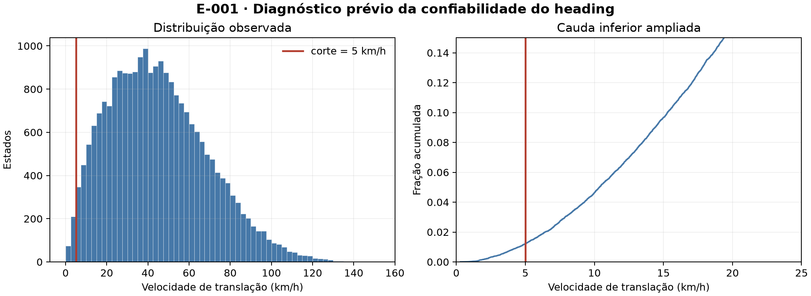
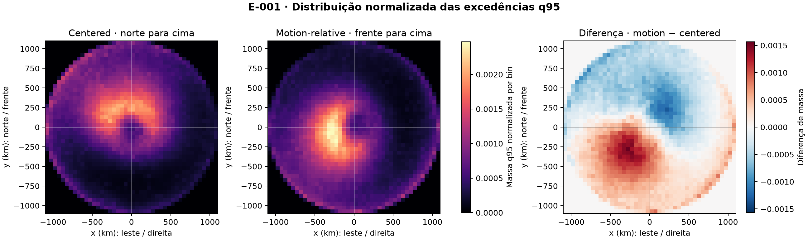
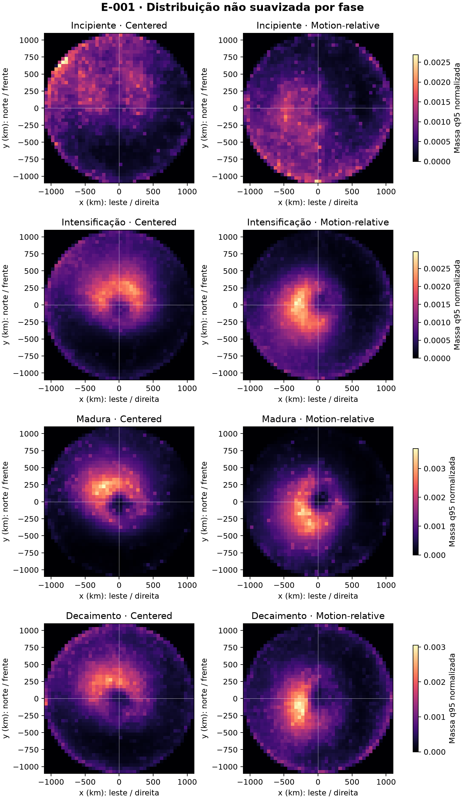
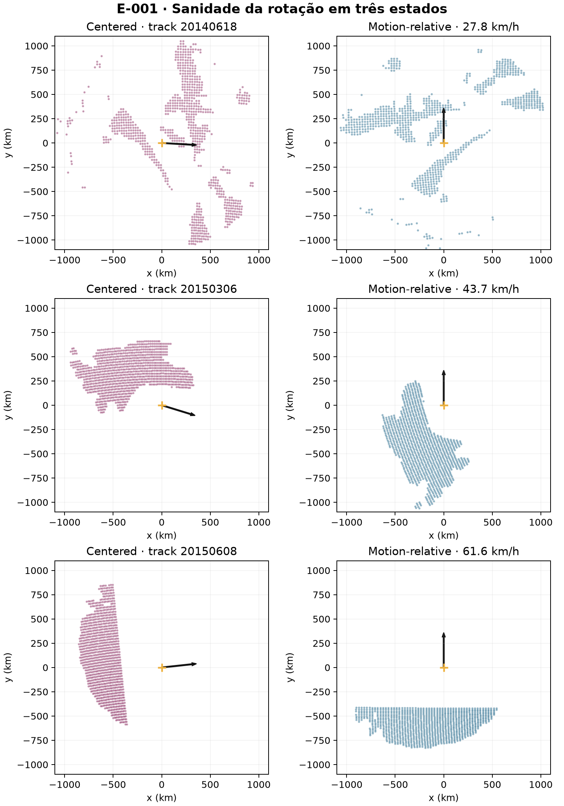

E-001 — Orientação pelo movimento do ciclone
- Status:
INCONCLUSIVE - Planejamento e execução: 21 de setembro de 2026
- Hipótese: H2 — orientar os campos pela direção de deslocamento reduz a dispersão espacial das excedências em relação às coordenadas apenas centralizadas.
- Questões e decisões relacionadas: Q-007 e D-005.
Contexto
Campos de vento de ciclones diferentes podem compartilhar uma organização física e, ainda assim, parecer difusos quando são sobrepostos com o norte geográfico sempre para cima. Isso acontece se a posição preferencial dos extremos acompanha a direção de deslocamento de cada sistema. Uma representação motion-relative gira cada estado para colocar todos os movimentos na mesma direção; uma representação centered apenas desloca o centro do ciclone para a origem.
E-001 é o primeiro teste formal dessa hipótese de representação. Ele não estima coverage probability, footprint probabilístico ou hazard geográfico. O objeto comparado é mais simples: a distribuição espacial normalizada das ocorrências de excedência do q95 local.
Pergunta
Mantendo os mesmos ciclones, estados, células, flags de excedência, pesos e bins, a orientação pela direção de movimento concentra espacialmente as excedências q95 mais do que a simples centralização geográfica?
Hipótese
H2 previa menor entropia e menor área necessária para concentrar frações fixas da massa de excedências na representação motion-relative. Fisicamente, esse resultado indicaria que parte da variabilidade aparente em coordenadas geográficas era apenas variabilidade de orientação entre tempestades.
Hipóteses alternativas e explicações concorrentes
A rotação poderia não ajudar se os extremos fossem organizados sobretudo por fatores geográficos, estrutura interna variável, intensidade ou estágio do ciclone. Também poderia concentrar apenas o núcleo e dispersar a cauda, ou revelar assimetria sem reduzir a dispersão total. Truncamento nas bordas do domínio poderia produzir uma mudança artificial; por isso o suporte foi reconstruído e diagnosticado separadamente.
Dados utilizados
A população partiu do catálogo canônico de estados ERA5 de 6 h derivado do Zenodo 18133432 e do Parquet de vento de 2010–2020. Foram elegíveis os estados no período comparável com suporte espacial — completo ou parcial — e direção de movimento confiável. Estados sem suporte não foram convertidos em zeros.
O q95 local foi fixado antes das métricas principais. A verificação prévia encontrou amostra suficiente nas quatro fases principais: 2.078 estados q95-positivos em fase incipiente, 7.301 em intensificação, 1.821 em fase madura e 4.891 em decaimento, depois do filtro de heading. Os sufixos 2, que indicam repetição não contígua da mesma fase física, foram agrupados somente nesses quatro estratos; os resultados por rótulo literal permanecem disponíveis. A análise global inclui também estados residual e com fase nula; eles não foram forçados a nenhuma das quatro fases.
| Quantidade | Valor |
|---|---|
| Ciclones com suporte antes do filtro de heading | 1.784 |
| Estados com suporte antes do filtro | 23.334 |
| Estados excluídos por heading < 5 km/h | 284 (1,22%) |
| Ciclones no conjunto comparável final | 1.784 |
| Estados no conjunto comparável final | 23.050 |
| Estados com ao menos uma excedência q95 | 16.921 |
| Ciclones com ao menos uma excedência q95 | 1.757 |
| Células q95 excedentes | 9.090.570 |
| Células de suporte efetivamente avaliadas | 136.177.047 |
Representações comparadas
Centered
Cada célula é expressa num plano tangente local centrado no ciclone. Sejam φ₀ e λ₀ a latitude e longitude do centro e φ e λ as da célula, todas em radianos; Δλ é λ − λ₀ envolvida em [-π, π). A distância de grande círculo usa:
O azimute α, em radianos e no sentido horário a partir do norte, é:
As coordenadas no plano tangente são:
Assim, x > 0 significa leste, x < 0 oeste, y > 0 norte e y < 0 sul. Essa transformação azimutal equidistante esférica preserva a distância radial d e evita tratar graus de longitude como distância cartesiana.
Motion-relative
Seja θ o heading do ciclone, em radianos, também medido no sentido horário a partir do norte. A rotação usada foi:
Aqui, x_m e y_m estão em km; y_m > 0 é a frente do movimento, y_m < 0 é a retaguarda, x_m > 0 é a direita e x_m < 0 é a esquerda. Intuitivamente, a rotação leva o vetor de deslocamento para cima sem alterar a distância ao centro. Por exemplo, para movimento para leste, leste vira frente e sul vira direita.
Estimativa da direção de movimento
O heading foi calculado exclusivamente do catálogo completo de estados, nunca das linhas de excedência. Para estados internos de uma track, sejam r₋ = (x₋, y₋) e r₊ = (x₊, y₊) os centros anterior e posterior projetados, em km, no plano tangente do estado atual, e t₋, t₊ seus horários, em horas. O vetor e o heading são:
vₓ é a componente leste e vᵧ, a componente norte, ambas em km/h; s é a velocidade de translação em km/h; θ está em [-π, π], medido no sentido horário a partir do norte. Nas extremidades, r₋ ou r₊ é substituído pelo próprio estado para formar uma diferença simples de 6 h; nos estados internos, a diferença é centrada em 12 h.
A distribuição foi examinada antes das métricas de concentração. A mediana foi 42,68 km/h, o percentil 1 foi 4,55 km/h e a faixa observada foi 0,31–150,89 km/h. O critério de confiabilidade foi fixado em 5 km/h, equivalente a 30 km em 6 h e aproximadamente uma célula da grade original de 0,25°. Diferentemente do procedimento exploratório herdado, movimentos menores não receberam heading leste artificial.

Método
As duas representações usaram exatamente os mesmos 23.050 estados, as mesmas células, as mesmas flags q95 e uma grade de 44 × 44 bins de 50 km no domínio [-1.100, 1.100] km em cada eixo. Não houve suavização nem máscara mínima de cobertura na análise principal. Cada estado q95-positivo recebeu massa total um, dividida igualmente entre suas células excedentes. Estados sem q95 permaneceram nas contagens e na auditoria de suporte, mas não definem posição numa distribuição condicionada à ocorrência.
O mapa agregado é, portanto, a distribuição normalizada das ocorrências q95 depois de atribuir o mesmo peso a cada estado q95-positivo. Ciclones mais duradouros ainda podem contribuir com mais estados; resolver equal-time versus equal-cyclone está fora de E-001.
Métricas
A primeira família mede dispersão de toda a massa. Para bins com proporções p_i > 0, a entropia de Shannon, em nats, é:
Bins vazios contribuem zero pelo limite de p log(p). Na mesma grade, menor H significa distribuição mais concentrada.
A segunda família ordena os bins da maior para a menor massa. A50, A75 e A90 são a menor área, em km², necessária para conter respectivamente 50%, 75% e 90% das excedências. Cada bin tem 2.500 km²; menor área significa maior concentração.
Como diagnósticos, foram calculados o centroide, a dispersão RMS em torno dele e a razão entre os eixos principais da matriz de covariância. Centroide e anisotropia descrevem deslocamento e forma; não foram interpretados automaticamente como concentração ou unimodalidade.
Critério de decisão
Antes dos resultados, evidência a favor de motion-relative exigia conjuntamente: entropia e A75 menores com intervalos bootstrap pareados de 95% inteiramente abaixo de zero; A50 e A90 no mesmo sentido; pelo menos três das quatro fases no mesmo sentido; menos de 10% de perda por heading; e ausência de mudança comparável na distribuição do suporte. O padrão simétrico favoreceria centered. Qualquer combinação restante seria inconclusiva. Não foi exigido um tamanho de efeito mínimo arbitrário.
Resultados globais
| Métrica | Centered | Motion-relative | Diferença motion − centered | IC bootstrap 95% da diferença |
|---|---|---|---|---|
| Entropia, nats | 7,1151 | 7,1128 | −0,0023 | [−0,0105; +0,0057] |
| A50, km² | 967.500 | 935.000 | −32.500 | [−45.000; −15.000] |
| A75, km² | 1.817.500 | 1.862.500 | +45.000 | [+17.500; +67.500] |
| A90, km² | 2.660.000 | 2.757.500 | +97.500 | [+65.000; +123.812] |
| RMS ao redor do centroide, km | 672,06 | 679,75 | +7,69 | [+5,45; +9,77] |
| Distância do centroide ao centro, km | 219,92 | 194,58 | −25,35 | [−31,74; −18,39] |
| Razão de anisotropia | 1,037 | 1,022 | −0,015 | [−0,041; +0,015] |
O núcleo de 50% ficou 32.500 km² menor após a rotação. Porém, A75 aumentou 45.000 km², A90 aumentou 97.500 km² e a dispersão RMS cresceu 7,69 km. A pequena redução de entropia atravessou zero no bootstrap. Assim, a rotação concentrou o núcleo, mas espalhou a massa intermediária e a cauda; as duas famílias de métricas não sustentam uma melhora global.

Resultado por fase
| Fase | Δ entropia (IC 95%) | Δ A75 em km² (IC 95%) | Leitura conjunta |
|---|---|---|---|
| Incipiente | +0,0292 [+0,0119; +0,0464] | +92.500 [+32.500; +137.500] | ambas indicam maior dispersão |
| Intensificação | −0,0143 [−0,0232; −0,0052] | −10.000 [−32.500; +15.000] | ganho parcial, A75 incerta |
| Madura | +0,0073 [−0,0084; +0,0263] | −7.500 [−42.500; +22.500] | sinais opostos e incertos |
| Decaimento | −0,0095 [−0,0258; +0,0072] | +35.000 [−20.000; +72.500] | sinais opostos e incertos |
Apenas a intensificação teve entropia e A75 pontualmente menores. A fase incipiente mostrou piora estável nas duas métricas. O efeito global, portanto, não é consistente entre fases.

Incerteza e bootstrap por ciclone
Foram produzidas 500 réplicas pareadas com semente fixa. Em cada réplica, track_id foi reamostrado com reposição e todos os estados e células do ciclone sorteado foram mantidos. A diferença foi sempre calculada entre representações dentro da mesma réplica. Isso evita tratar 9 milhões de células como unidades independentes e quantifica a estabilidade entre ciclones.
Os intervalos confirmam o conflito: A50 favorece motion-relative, mas A75, A90 e RMS favorecem centered. Para entropia, 68,2% das réplicas tiveram diferença negativa, insuficiente para excluir ausência de efeito.
Robustez, suporte e verificações de sanidade
A reconstrução reproduziu exatamente as 136.177.047 células de suporte dos estados incluídos. Para cada bin e representação, spatial_bins.csv registra o total de estados elegíveis, estados com suporte efetivo, células avaliadas e excedências q95. Como o diagnóstico não indicou bins de suporte escasso dominando os resultados, nenhuma máscara pós-resultado foi introduzida. A entropia do suporte foi 7,34174 em centered e 7,34253 em motion-relative, diferença de apenas +0,00079 nat e em sentido oposto à pequena redução da entropia q95. Restringir a comparação aos 15.437 estados com suporte completo preservou o conflito: ΔH = −0,00463, ΔA75 = +35.000 km², ΔA90 = +80.000 km² e ΔRMS = +4,70 km.
Os testes automatizados verificaram origem, sinais cardeais, frente/direita, preservação de distância e transformação inversa. Em três estados individuais, o maior erro de preservação de distância foi 2,27 × 10⁻¹³ km e o maior erro de ida e volta foi 2,34 × 10⁻¹³ km.

Interpretação
A orientação pelo movimento revela uma estrutura visual diferente e desloca o centroide para uma posição média atrás e à esquerda do movimento (x_m = −136 km, y_m = −139 km). Isso é evidência de assimetria relativa ao movimento, mas não de maior concentração global. O núcleo ficou mais compacto, enquanto regiões que contêm 75% e 90% da massa ocuparam áreas maiores.
Esse comportamento mostra por que um mapa isolado ou uma única métrica teria sido enganoso. E-001 não sustenta a hipótese H2 no sentido amplo definido antes da análise.
Limitações
- q95 foi adequado para este teste, mas não se torna por isso o threshold definitivo do projeto.
- Cada estado q95-positivo tem peso igual; ciclones longos contribuem com mais estados.
- O Parquet disponível é condicionado pelo filtro de entrada e cobre apenas 2010–2020.
- O raio de 1.100 km foi herdado e não recebeu análise de sensibilidade aqui.
- Fase, intensidade, tamanho, normalização radial, terra–oceano e multimodalidade não foram controlados.
- O bootstrap quantifica estabilidade por ciclone, mas não substitui validação fora da amostra ou estudo completo de robustez.
- Centroide e covariância resumem a distribuição e não demonstram uma forma elíptica ou unimodal.
Conclusão
E-001 é inconclusivo quanto à escolha de representação. Motion-relative melhora a concentração do núcleo A50, mas piora A75, A90 e RMS; a variação de entropia é pequena e seu intervalo inclui zero; e as fases não concordam. H2 não recebeu o conjunto de evidências exigido.
Consequência para o projeto
Não há base para promover motion-relative a representação principal nem para declarar centered cientificamente superior. A escolha permanece aberta conforme D-005. Até novo teste preregistrado, centered pode funcionar como referência transparente e motion-relative como representação diagnóstica de assimetria; isso não equivale a uma decisão definitiva.
E-001 não avançou para weighting alternativo, threshold sensitivity, normalização por tamanho ou modelagem probabilística.
Reprodutibilidade
O protocolo congelado está em scripts/03_e001_orientation/protocol.json; a implementação e os testes, em scripts/03_e001_orientation/; e os produtos, em outputs/03_e001_orientation/. O resumo reprodutível contém hashes das três entradas, do protocolo e do script, além da semente bootstrap. A sequência de execução está em proveniência e reprodutibilidade.
Resposta final de E-001
Não de forma consistente. Depois de controlar apenas pela orientação do movimento, sem mudar estados, células, flags, pesos ou bins, as excedências q95 formaram um núcleo 32.500 km² menor em A50, mas exigiram 45.000 km² a mais em A75 e 97.500 km² a mais em A90; a RMS aumentou 7,69 km e a diferença de entropia foi −0,0023 nat com IC 95% de −0,0105 a +0,0057. A orientação revela assimetria, porém não tornou a distribuição globalmente mais organizada segundo o critério preregistrado.